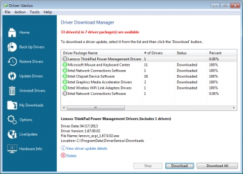
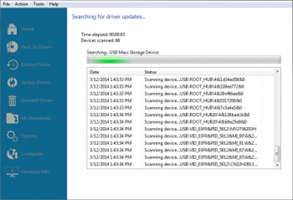

Case study
GIP-taak 11
Case study: driver genius
Onderwerp
Driver genius is een programma dat je helpt bij het up to date houden van Windows stuurprogramma’s. Dit programma kan heel handig zijn omdat veel problemen met de computer, gerelateerd zijn aan niet geüpdatet drivers. Maar wat zijn drivers? Dit zijn stuurprogramma’s van de onderdelen die aan ge computer zijn aangesloten. De stuurprogramma’s zorgen ervoor dat je aangesloten onderdelen goed kunnen samen werken met Windows.Je zou deze drivers per merk allemaal zelf gaan kunnen opzoeken maar dat is niet nodig als je Driver Genius hebt. Hoe doet Driver Genius dit allemaal? Het programma kijkt eerst naar welke stuurprogramma’s de onderdelen nodig hebben. Dan kijkt het na of er voor deze stuurprogramma’s een nieuwe update bestaat. Als er een update zou zijn dat u nog niet geïnstalleerd hebt, vraagt Driver Genius of het de update mag downloaden. Dan moet u gewoon op de knop “download all” klikken. Als u dat hebt gedaan, download het programma alle drivers en zorgt hij ervoor dat er geen connectie problemen meer zullen zijn tussen uw stuurprogramma’s en uw Windows.
Ervaring op stagebedrijf
Waarom maak ik mijn taak over deze tool? Ik heb dit programma zeer vaak moeten gebruiken op mijn stagebedrijf “2beit”. Zij gebruiken het enorm veel bij het opkuisen van computers en bij het installeren van nieuwe pc’s. Dit komt omdat ze heel veel pc’s bouwen en dat is niet de enigste dienst die zij hebben bij het installeren van nieuwe pc’s voor hun cliënteel. Zij maken de computer gebruiksklaar. Om dit te kunnen doen, moeten ze alle stuurprogramma’s van de onderdelen installeren. Ik moest driver genius ook nog gebruiken bij een ‘clean install’ van een laptop. Zij gebruiken het eigenlijk voor elke pc/laptop die binnenkomt zodat al hun afgewerkte producten voor hun cliënteel ‘up to date’ zijn.
Positief vs negatief
| Positief | Negatief |
|---|---|
| werkt snel | vindt niet alle updates van externe drivers |
| makkelijk te gebruiken | onnondige updates vinden |
| één druk op de knop |
Concurrentie en mening stagebegeleider
Driver genius is niet het enige programma dat dit soort diensten verleent. Advanced Optimizer v2 is een voordbeeld van een concurrent van driver genius. Waarom heeft mijn stagebedrijf gekozen voor driver genius in plaats van Advanced optimizer v2 of een andere tool die dezelfde diensten verleent? Met deze vraag ben ik naar mijn stagebegeleider gegaan. Hij had hier een zeer kort antwoord op en dat was dat hij het zelf niet had gekozen maar één van zijn werknemers. Hij is wel zeer tevreden over het programma. Daarom maakt hij dus gebruik van driver genius. Hij zei ook wel dat hij altijd bereid is om te veranderen van tool als hij een betere tool vindt met dezelfde diensten.
Voordbeeld
Hieronder vindt u twee schermafdrukken van hoe het systeem er uit ziet als je er gebruik van maakt. Bij de linkse afbeelding heeft hij alle updates gevonden en vraagt het programma of het de updates mag installeren. De rechtse afbeelding is een schermafdruk dat u zal zien wanneer u de installatie van de updates heeft gestart.
 

Share this post
Twitter
Google+
Facebook
Reddit
LinkedIn
StumbleUpon
Email